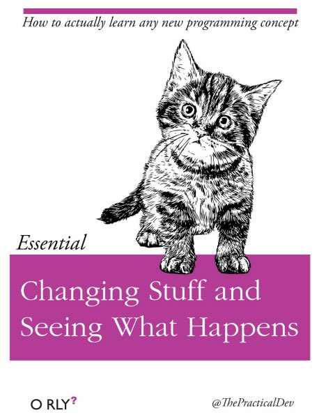

Chapter 3 R Tutorials
3.1 Getting Started
To get started, we will follow along with Andy Field’s brilliant tutorials which will walk us through:
Installing R and RStudio
Customizing your workspace
Workflow in R Studio
Loading packages and creating your first project
Creating an R Markdown document
R Markdown basics
If you run into problems, don’t hesitate to reach out to me sheron@laurentian.ca for help. I can always meet you in person or via zoom to get you sorted. There is also loads of online help available that’s usually only a Google away.
3.1.1 Installing R & R Studio
To Install R and R Studio we will follow along with Andy’s “Installing R and R Studio” tutorial.
The R interface can be a bit intimidating at first, stick with it though as it does become easier over time, and you’ll feel like a total wizard in the future when you start to know your way around.
3.1.2 Customizing your workspace
Next we will follow a Quick Tour of R Studio to get to know our way around and customize the workspace. I have my workspace set up the same way and find it the best way.
To open R Studio for the first time, click on the Windows icon and search for it or on a Mac search for R Studio in the application search bar (top right).
3.1.3 Create your project
Next, we will follow along with the Working in RStudio tutorial. Don’t get too bogged down in his explanation of workflow and folder structure; however, you will create an R Studio project file for your assignment. Follow along and create your own project–this will be the folder for your assignment.
- At 8:24 in the video, you will follow along to create your project. Your project folder will be on your computer (rather than on OneDrive as he does in the video). The best place for this is off your documents folder. Your new project window will look something like the image below. The Directory name is whatever you’d like to call your project. Ignore the tick boxes but do go ahead and click “Open in new session”.

From inside your new project, create a data folder from the file pane (follow along with Andy). No need to create an r.docs folder like he does.
Create an R Markdown file (12:56 in the video)
Follow along with the rest of the tutorial to get to know R Markdown.
Don’t worry if its still confusing at this time, we’ll learn more about RMarkdown soon.
Move to the next step: installing packages.

3.1.4 Install Packages
Next, we will follow along with the Install Packages tutorial.
- Install the packages he recommends (tidyverse and here)
We will also install the tutorial package that I created for you, which will include an assignment template to make things a bit easier for you in Markdown.
Install these packages as well by copy and pasting the code below to your console.
then load them and add them to the library chunk of your R Markdown document by copy and pasting the code below:
3.2 Learning More
The material we will cover in this short assignment will only give you a taste of what R is capable of. For advanced operations, you will need to learn more.
The best way to become more proficient with R, like any tool, is to actively use it. I learned R from the internet out of frustration with the limitations of SPSS. Though there was lots of trial and error and mistakes at first, over time I got better and better, and had to look up code less and less.

At first it may feel daunting, but you will quickly see that there are amazing resources online. FOr example, maybe you want make your wide dataset long for some multilevel analyses–how do you do this in R? Well, a simple “how to make wide dataset long in R” will conjur up thousands of useful links where you can simply copy and paste their code and then just adjust it to use with your specific data. “How do I run an ANOVA in R?” or “ANOVA tutorial in R” will find you:
https://statsandr.com/blog/anova-in-r/
The great thing about these kinds of tutorials is that they include the code and often the rationalization as to why they are conducting the analyses like they are with recommendations of what steps should come first as well as how you would test any assumptions. You will learn SOOO much not just about R, but about data this way.
R Markdown
R Markdown Cheatsheet.
https://www.rstudio.com/wp-content/uploads/2015/02/rmarkdown-cheatsheet.pdf